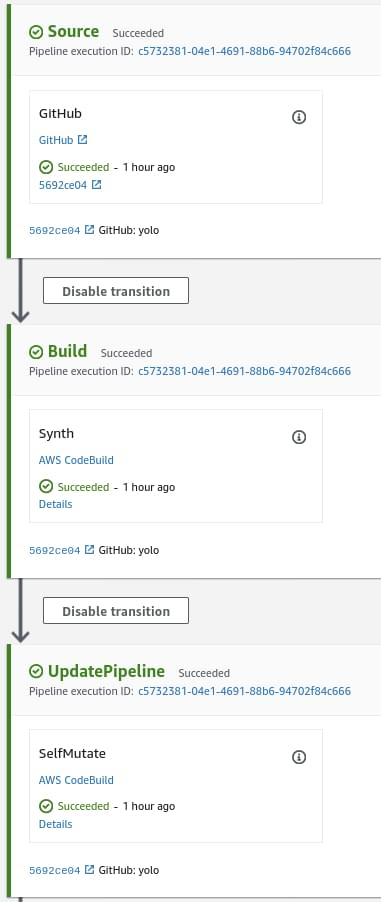
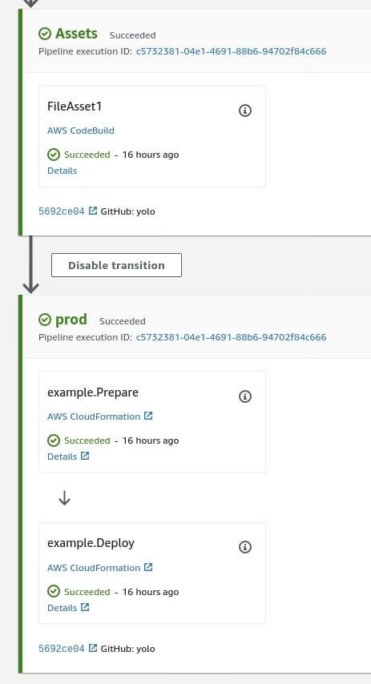

Self-mutating CI/CD and native Lambda dependencies in CDK
Posted on 28.08.2020 by Gareth Evans - Senior Full-Stack DeveloperA walkthrough of new higher level AWS CDK constructs for inception pipelines and bundling Lambda code with native dependencies
Introduction
Today I’d like to talk about two of the newer features that have come to CDK: CDK Pipelines and language specific higher level Lambda constructs including NodejsFunction. These two features combined eliminate the vast majority of boilerplate work when CI/CD’ing a CDK application, especially those that contain Lambdas with a build step. It is now effectively free to have CI/CD for even the most trivial of applications whilst also having pain free Lambda dependencies in CDK!
To demonstrate just how good this is we’ll walk through the creation of a CDK application containing a Lambda function with a dependency that requires native code to be compiled against the AWS Lambda runtime environment. The example code used in this blog is available in GitHub.
Inception Pipeline
An inception pipeline, or self-mutating pipeline, is a CodePipeline that not only performs CI/CD for an application but will also update itself, allowing you to have both CI/CD and application deployed together. Lets create a CDK application in TypeScript because we like using higher level, statically typed languages for safety and developer productivity:
npx cdk init --language=typescript
This gives us a reasonably uninteresting placeholder CDK application that you’d have already seen so lets jump ahead and add a CdkPipeline into it:
npm i @aws-cdk/aws-codepipeline @aws-cdk/aws-codepipeline-actions @aws-cdk/pipelines
And in lib/cdkpipeline-lambda-example-pipeline.ts:
export class CdkpipelineLambdaExamplePipeline extends Stack {
constructor(scope: Construct, id: string, props?: StackProps) {
super(scope, id, props);
const sourceArtifact = new Artifact();
const cloudAssemblyArtifact = new Artifact();
const pipeline = new CdkPipeline(this, 'Pipeline', {
pipelineName: 'cdkpipeline-lambda-example',
cloudAssemblyArtifact,
sourceAction: new GitHubSourceAction({
actionName: 'GitHub',
output: sourceArtifact,
oauthToken: SecretValue.secretsManager('secret-name'),
owner: 'KZNGroup',
repo: 'cdkpipeline-lambda-example',
branch: 'master'
}),
synthAction: SimpleSynthAction.standardNpmSynth({
sourceArtifact,
cloudAssemblyArtifact,
buildCommand: 'npm run build',
environment: {
privileged: true
}
}),
});
}
}
At first glance this might look like the usual Pipeline construct capable of deploying whatever tickles your fancy but it’s actually specifically designed for CDK applications. Don’t worry, you still have an escape hatch to customise it to heart’s content.
One notable difference here is SimpleSynthAction.standardNpmSynth, a conveniance method for generating a CodeBuild stage for installing, building and synthesising the CloudFormation from our CDK application. The buildspec it creates looks like this:
{
"version": "0.2",
"phases": {
"pre_build": {
"commands": [
"npm ci"
]
},
"build": {
"commands": [
"npm run build",
"npx cdk synth"
]
}
},
"artifacts": {
"base-directory": "cdk.out",
"files": "**/*"
}
}
What is not apparent beyond the typical source and build stages is a third CodePipeline stage that is responsible for the CodePipeline updating itself:
This stage will run a cdk deploy command to update the pipeline stack:
{
"version": "0.2",
"phases": {
"install": {
"commands": "npm install -g aws-cdk"
},
"build": {
"commands": [
"cdk -a . deploy cdkpipeline-lambda-example-pipeline --require-approval=never --verbose"
]
}
}
}
We can now push this up to our repo and perform the initial deployment of the application:
npm run build npx cdk deploy cdkpipeline-lambda-example-pipeline
From now on, even if we change the CodePipeline itself, everything can be updated by PR’ing/pushing to our repository, all via the minimal code we wrote in lib/cdkpipeline-lambda-example-pipeline.ts.
Language specific Lambda API
Now that we have our self-mutating stack lets make it deploy something resembling an application. For the purpose of demonstrating what NodejsFunction provides us we’ll choose to use an NPM dependency that contains native code compiled by node-gyp. If we were to build and package this function on our local developer machines or in a CodeBuild instance it would not be built against the (operating system) libraries available in the Lambda runtime.
Installing @aws-cdk/aws-lambda-nodejs is the usual:
npm install @aws-cdk/aws-lambda-nodejs npm install -D bcrypt @types/bcrypt
For our “application” lets just make a Lambda that hashes a secret in lib/cdkpipeline-lambda-example-stack.bcrypt.ts:
import { hash } from 'bcrypt';
export async function handler(event: { secret: string }): Promise<{ hashed: string }> {
return hash(event.secret, 10).then(hashed => ({ hashed }));
}
Now for the interesting bit, lets add a new stack containing a NodejsFunction to lib/cdkpipeline-lambda-example-stack.ts:
export class CdkpipelineLambdaExampleStack extends Stack {
constructor(scope: Construct, id: string, props?: StackProps) {
super(scope, id, props);
new NodejsFunction(this, 'bcrypt', {
nodeModules: ['bcrypt'],
projectRoot: join(__dirname, '..')
});
}
}
By convention NodejsFunction will look for the Lambda entry point in a file with the instance’s ID appended to the stack name, so in our case the stack is defined in lib/cdkpipeline-lambda-example-stack.ts and the construct instance’s ID is bcrypt so it will look for the file lib/cdkpipeline-lambda-example-stack.bcrypt.ts. This behaviour can of course be changed via the entry property so that you could store more complicated Lambdas away in their own subdirectory.
By default NodejsFunction will use Parcel to transpile and bundle your Lambda into a single file. Because this is run in a Docker container all we need to do to get our native-code-using dependencies included in a Lambda compatible environment is to either specify them in the nodeModules property or set forceDockerBundling: true. Note the node_modules:
ls cdk.out/assembly-cdkpipeline-lambda-example-pipeline-prod /asset.3f7b8aaefe8107947cd6d1011849cfe941df3fcbeea648f31b23f1efdf2f966f index.js node_modules package.json package-lock.json
In order to include deployment of our appplication’s stack in the pipeline all we need to do is add a new stage:
pipeline.addApplicationStage(new CdkpipelineLambdaExampleStage(this, 'prod'))
When we PR/push this change our pipeline mutates itself to add the new stage and then executes the new stage to deploy our application stack:
Now we can run our “application” and observe it’s working as expected:
ws lambda invoke --function-name prod-example-bcryptADE4EA6A-1M1T2DNEO6B84 --payload
'{"secret":"12345"}' out.json && cat out.json
{
"StatusCode": 200,
"ExecutedVersion": "$LATEST"
}
{"hashed":"$2b$10$pkxXxlvZv4TebSPZQ5bD/es2UEfMF6ANQhcOfyv3aA4PPpywoGlMe"}
Ta-da! üéâ
This example has shown the Node.js language specific Lambda API in CDK, however there also exists one for Python. If you’re using another language the regular @aws-cdk/aws-lambda package has the same capability to build against a Lambda runtime via Docker.
Conclusion
All up we didn’t have to write much code at all but we got so much functionality:
- A self-mutating Continuous Deployment pipeline for our application.
- Lambda code automatically transpiled.
- Lambda dependencies automatically bundled and optionally packaged as node_modules where required.
- Lambda builds are performed inside a Docker container that matches the Lambda runtime.
- Did I mention CdkPipeline makes it trivial to add multiple stages that deploy across accounts, optionally with approvals?
- AWS have an excellent blog titled CDK Pipelines: Continuous delivery for AWS CDK applications that is very much worth a read. It covers more of a walk through of CDK functionality such as the (optionally cross account) bootstrapping process.
The example code used in this blog is available in GitHub.
Thanks for reading! üôè